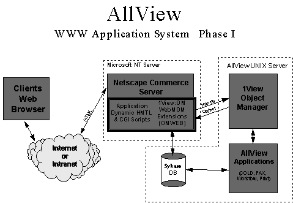
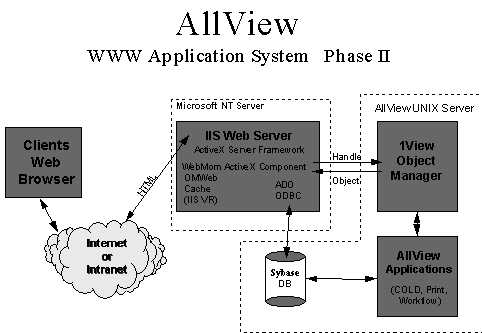

|
| ||
|
| ||
Microsoft Corporation
April 11, 1997
AllView™ System
WEB Access
based on
Network Imaging's 1View™
Active Server Component
Contents
Overview
Business Problem
System Description
AllView Web Access
Phase I: 1View:Object Manager:WebMOM
Phase II: 1View:WebMom Active Server Component
In 1994, AT&T Network Systems Division, working in concert with other operating divisions at AT&T, recognized the need to provide engineering, customer teams, and customers with a tool to access records, documents, and drawings. The response to this need was the creation of a system named AllView™ within AT&T, with the responsibility of managing the capture, storage, display, distribution, and printing of information that began its life on paper, film, or as computer-generated output.
AT&T selected Network Imaging Corporation's 1View™ line of software as the technology that would provide AllView with a suite of products capable of meeting both the immediate and future needs that were envisioned. The 1View Suite consists of a rich set of application programming interfaces, connectivity tools, and information capture services. It uses sophisticated caching, information clustering, and usage-based storage algorithms to optimize transactional performance. The distributed framework optimizes database, application, and presentation performance in mixed server and multiple application environments. AllView (Lucent trademarked name for their 1View implementation), provides on-line access to drawings, specifications, and other documentation.
Initially implemented in 1995, AllView has expanded to meet the changing needs at Lucent. All files are stored as objects in the Network Imaging 1View:Object Manager, which provides a scalable storage backend that abstracts the object from the application, providing a enterprise storage solution that manages multiple application references to the common multimedia information base, thereby conserving expensive storage resources. In addition to best location storage, Object Manager can provide a transaction journal or mirroring and maintains the reference until all applications have deleted the data. It includes version control and management capabilities for document management or publishing environments where multiple versions may need to be maintained.
The AllView system has permitted integration of information from separate sources, and today it provides users with the ability to access and distribute information seamlessly. Initially, AllView was deployed to 200 centrally located users and was accessed via the 1View:EDM interface. By 1996, the system had grown to 1000 users, who access the system both by the EDM interface and a Microsoft Windows NT®-based Web server, and Internet Explorer clients. Currently, two million objects of varying datatypes are stored in AllView.
The AT&T organization that is responsible for AllView became part of Lucent Technologies in the divestiture.
Lucent Technologies has integrated the 1View Suite into a complex distributed engineering services environment with computer-aided design systems, host-based publication systems, complex legacy database applications, and other office applications. The Lucent AllView System provides automation to a series of manual and/or semi-automatic legacy information systems involved in the engineering and maintenance of Telco switching centers.
The competitive environment in the Telcom Industry has changed very dramatically as part of the overall deregulation process. Business as usual will not work in today's competitive environment. The opening paragraphs of this article indicate the need for systems that
Lucent recognized that their existing systems would not provide for their customers' changing needs. They were being pressured by their Local Telephone Operating Company customers to improve their processes to support the large Lucent switch installations. Lucent's customers felt that the response times provided by the existing manual and host-based legacy systems were inadequate to provide them with a competitive advantage. Lucent's response was to start a re-engineering process, which resulted in the definition of an integrated software support system that they called AllView. After defining the system requirements, Lucent started a procurement process and identified the 1View Suite as the best solution.
The AllView system provides management of the work-in-process associated with Job Orders received from their customers. The system supports the capture of paper- and film-based documents, as well as mainframe-based reports and publications as part of an overall Job Order Management system.
The system uses Electronic Job Folders to provide the creation, deletion, update, and query access to the work-in-process through the life cycle of the Job. The system manages the Job Orders, Drawings, Specifications, Markup, and Issue Release process. The system also provides complete management of Fax, Printing, Plotting, and Distribution during the process. Fax support includes both Fax In and Fax Out, as well as the support of regular office size and large engineering size drawings.
The latest addition to the AllView system is the Web Multimedia Object Management (WebMom) Internet extensions to the 1View product suite from Network Imaging Corporation. The WebMom product adds Intranet and/or Internet access to the millions of documents that are stored and managed by the system. Field maintenance people can now gain dial-in access to needed documents from remote sites. The Lucent Intranet now has full access to the stored document base with the same access management and control that is an integral part of the AllView system design provided by the 1View system.
The 1View Suite acts as a distributed integration framework to provide interactive interface between the existing CAD drawing systems, Image Viewing and Markup systems, and Mainframe based processes in a distributed Local Area and Wide Area networking environment. The system also provides seamless access to the Lucent open mail system that supports most existing mail environments.
The system installation consists of the following:
System solutions like AllView provide the real process improvements required to be competitive in today's environment. These systems bring cost-effective implementation reality to the re-engineering process, while providing the framework for managing complex interactive information flow processes.
Objects captured by the AllView system are managed by the 1View:Object Manager, and are indexed in a Sybase database selected by Lucent. Applications -- such as 1View:EDM and the Web access application built around 1View:WebMom -- request objects over TCP/IP, using either 1View APIs or the new Active control.
The 1View:EDM application is a traditional client-server application that is used to capture and index documents and data. A 1View:COLD module automatically captures and indexes specification and report data. The 1View:WebMom product was used to build the Phase I Web Access Interface to the AllView system. The AllView Web Access interface is currently being upgraded to utilize Microsoft Active Server and Network Imaging's 1View:WebMOM Active Server Component for Phase II. The new 1View:OMWEB Component, in combination with Microsoft Active Server, provides Lucent with a system that delivers higher performance, while greatly reducing the effort required to maintain and enhance the software.
The 1View:WebMOM Extensions represent a collection of tools that allows developers to construct custom World Wide Web applications using 1View:OM as a backend storage repository. Central to the 1View:OM Extensions is a Common Gateway Interface program, OMWEB, that provides a means to retrieve objects from 1View:OM and display them at a Web browser. The following graphic portrays the relationship between OMWEB and the AllView system utilizing the 1View:WebMOM enhancements as an interface to the database and OM backend storage system.

In the AllView Web subsystem, the WebMOM extensions provided by Network Imaging allow clients who are running standard HTML browsers to access data stored in the AllView system. Security is maintained through a combination of interfaces designed to meet Lucent's requirements. The client side application consists of a number of dynamically built HTML forms used to formulate queries against the various application database tables, as well as tables for authentication and privilege.
The user of the HTML application generates a query by filling out a form which is interpreted by WebMOM processing code residing on the Web server. The WebMom application formulates a query to the database over an ODBC interface, and then takes the result set of the query and builds a structure on the server for the result set. It then dynamically builds HTML for the client HTML browser application in a table layout format which represents records in the AllView database and objects stored in 1View:Object Manager. The results of the query are formatted into an HTML page with embedded hypertext links to a set of objects. Each hypertext link references the OMWEB CGI program to allow the contents of the object to be rendered at the workstation.
In addition to the OMWEB program, a set of C static libraries are provided with the toolkit. The libraries are designed to assist the developer in constructing CGI programs. These libraries include:
The 1View:OM Web Extensions conform with the Common Gateway Interface 1.1 standard.
The Phase I AllView Web development effort using CGI and the WEBMOM libraries, required over 10,000 lines of Multi-threaded C++ code, due to the necessity to create all the scheduling, connection management, database session management, cookie security, and dynamic HTML generation software. The functionality provided by Microsoft Active Server greatly reduced the development effort for Phase II.
By providing the Object Manager (OM) Active Server component as a new addition to 1View:WebMom, Network Imaging provides Web developers with the ability to access high capacity, scalable storage in an efficient manner. A key feature of this new method for accessing Object Manager is its ease of use.
The thin ActiveX OM component requests an object from OM via a winsock RPC interface, and the OM Volume Manager which currently manages the object responds, delivering the requested object via winsock. An OM client, requesting a number of objects, transparently delivers the objects that satisfy the request, regardless of the location or operating system the Volume Manager is running on. The various components in Microsoft Active Server, such as the Connection Component (ADO Database Access), greatly reduce the amount of coding required to develop and deploy high performance Internet and intranet solutions.

Utilizing both Microsoft Active Server Pages and Network Imaging's 1View:WebMOM ActiveX Server Component, the Phase II development for AllView Web required under 1,000 lines of Scripting code versus 10,000 lines of C++. Microsoft Server components are implemented as ISAPI extensions, which greatly increase performance over CGI-based implementations while offloading most of the session management and database connectivity issues from a developer.
Key features of the 1View:WebMOM Active Server Component:
Did you find this material useful? Gripes? Compliments? Suggestions for other articles? Write us!
© 1999 Microsoft Corporation. All rights reserved. Terms of use.